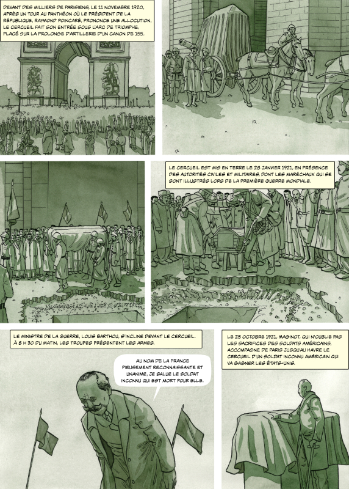
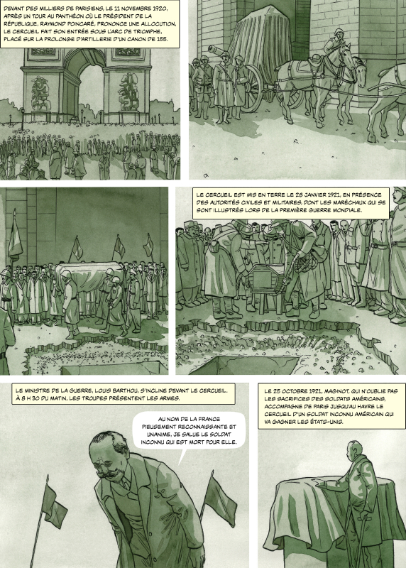

Nos travaux, vos récits.
Cherchez-vous à renforcer ou étendre votre lien avec le public ?
Désirez-vous valoriser certains aspects de votre patrimoine pour vous démarquer au sein de votre territoire ?
Avez-vous en tête des événements qui mériteraient d'être racontés ?
Souhaitez-vous élargir votre rayonnement culturel via votre boutique ou en distribuant un album en librairie ?
Discutons-en ! Nous trouverons probablement la solutions.
Des albums historiques aux récits de fiction, en passant par les livres pour enfants, notre parcours diversifié a renforcé notre conviction :
la bande dessinée est un outil puissant pour partager les connaissances et communiquer des messages percutants.
Musées, maisons d'édition, associations, collectivités... Nos partenaires nous ont fait confiance, et nous leur en sommes profondément reconnaissants.


 
